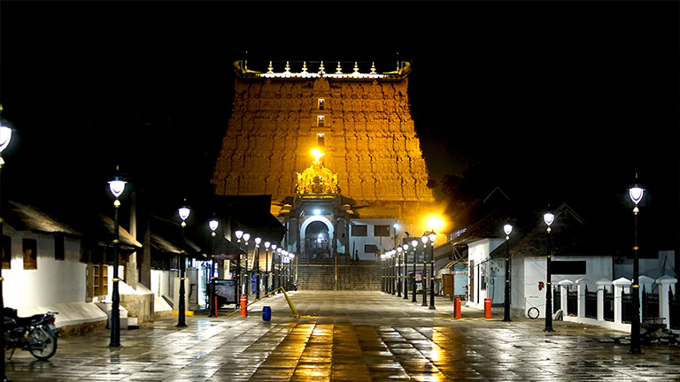
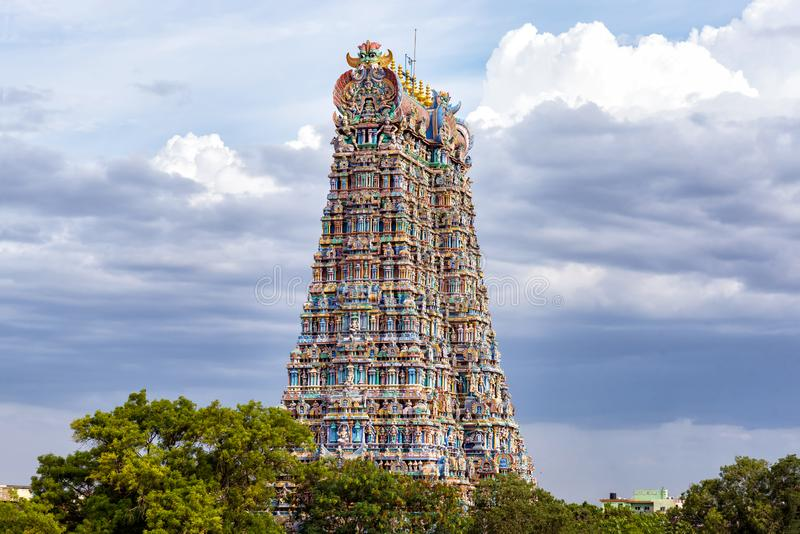
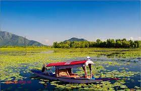

1.Padmanabhaswamy Temple,Thiruvananthapuram  The Padmanabhaswamy temple is a Hindu temple located in Thiruvananthapuram, the state capital of Kerala, India. The name of the city of Thiruvananthapuram in Malayalam translates to "The City of Lord Ananta", (City of the Divine Serpent)referring to the deity of the Padmanabhaswamy temple. The temple is built in an intricate fusion of the Chera style and the Dravidian style of architecture, featuring high walls, and a 16th-century gopura.While the Ananthapura temple in Kumbla is considered the original seat of the deity ("Moolasthanam"), architecturally to some extent, the temple is a replica of the Adikesava Perumal temple in Thiruvattar.
2.HawaMahal,Jaipur,Rajasthan Hawa Mahal ("The Palace of Winds" or "The Palace of Breeze") is a palace in Jaipur, India approximately 300 kilometers from the capital city of Delhi. Built from red and pink sandstone, the palace sits on the edge of the City Palace, Jaipur, and extends to the Zenana, or women's chambers. The structure was built in 1799 by Maharaja Sawai Pratap Singh, the grandson of Maharaja Sawai Jai Singh, who was the founder of Jaipur.He was so inspired by the unique structure of Khetri Mahal that he built this grand and historical palace. It was designed by Lal Chand Ustad. Its five floor exterior is akin to honeycomb with its 953 small windows called Jharokhas decorated with intricate latticework.
3.GoldenTemple,AmritSar,Punjab The Golden Temple, also known as Harmandir Sahib, meaning "abode of God" or Darbār Sahib, meaning "exalted court" , is a gurdwara located in the city of Amritsar, Punjab, India. It is the preeminent spiritual site of Sikhism.
4.Meenakshi Mandir(Arulmigu Meenakshi Sundareshwarar Temple)  Arulmigu Meenakshi Sundareshwarar Temple is a historic Hindu temple located on the southern bank of the Vaigai River in the temple city of Madurai, Tamil Nadu, India. It is dedicated to Thirukamakottam udaya aaludaiya nachiyar (Meenakshi), a form of Parvati, and her consort, Sundareshwar, a form of Shiva.The temple is at the center of the ancient temple city of Madurai mentioned in the Tamil Sangam literature, with the goddess temple mentioned in 6th century CE texts.This temple is one of the Paadal Petra Sthalam. The Paadal Petra sthalam are 275 temples of lord Shiva that are revered in the verses of Tamil Saiva Nayanars of 6th-9th century CE.
5.DalLake,Srinagar,Jammu&Kashmir  Dal Lake is also one of the best locations in Kashmir for film shooting as it offers some incredible vistas of lofty rolling hills, the distant snow-capped mountains, shikaras cruising quietly and the houseboat standing still with the perfect poise. The canopied Shikaras sailing on the lake are one of the major attractions of Dal Lake. The houseboats on the lake are also the top attraction as the best accommodation option in Srinagar to the tourists.